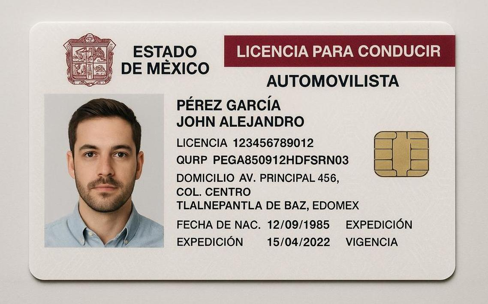

CIUDADANO...
Una "guía ciudadana" puede ser un documento o un recurso que ofrece información sobre los derechos, deberes y responsabilidades de los ciudadanos para que puedan participar activamente en la sociedad.
Su objetivo es orientar a las personas para entender y ejercer plenamente su rol como miembros de una comunidad, ya sea a través de la educación cívica, la participación en proyectos públicos o la promoción de la seguridad comunitaria.
Conceptos clave de una guía ciudadana Educación cívica: Proporciona conocimientos sobre la estructura del Estado, el funcionamiento de las leyes y los procesos democráticos para formar ciudadanos informados. Derechos y deberes: Explica los derechos y obligaciones de los ciudadanos, fomentando un compromiso social y el respeto por las normas y el medio ambiente.
Participación ciudadana: Incluye herramientas e información para que las personas puedan incidir en la toma de decisiones y participar en la definición de proyectos públicos en sus comunidades.
Seguridad comunitaria: Ofrece orientación sobre los deberes y responsabilidades de los ciudadanos para contribuir a la seguridad y el bienestar en su barrio y comunidad. Herramienta de consulta: Sirve como una fuente de información accesible y práctica para que los ciudadanos puedan orientar sus ideas y acciones. l